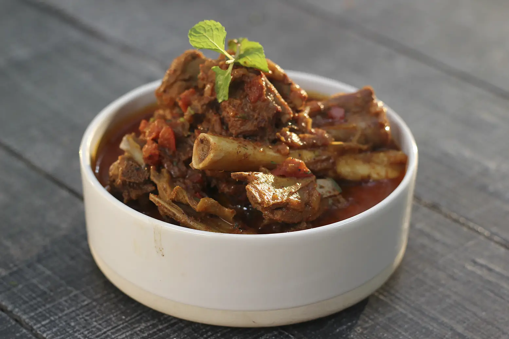

Anaradna Pahadi Mutton

What’s a biryani without some succulent pieces of mutton wrapped in a perfect blend of aromatic spices and herbs!?
unlike other dishes, a day-old mutton prep will always be all the more tastier on the palate! Try it the next time you plan on to take on this meat.
Ingredients
- Mutton , cut into 1 inch pieces on the bone 750 grams
- Pomegranate (anar) juice 1 cup
- Kachchi ghani mustard oil 2 tablespoons
- Onion , finely chopped 1 medium
- Bay leaf 1
- Ginger-garlic paste 1 tablespoon
- Red chilli powder 2 teaspoons
- Garam masala powder 1 teaspoon
- Turmeric powder 1/4 teaspoon
- Coriander powder 1 1/2 tablespoons
- Cumin powder 1 teaspoon
- Salt to taste
- Tomatoes , finely chopped 2 medium
- Black peppercorns , crushed to taste
- Fresh coriander leaves , chopped 1 tablespoon
- Yogurt 2-3 tablespoons
- Fresh mint leaves to garnish
Recipe Method
- Heat an aluminium degchi, add kachchi ghani mustard oil till it begins to smoke.
- Add onion and sauté till it turns brown. Add bay leaf, mix and sauté for 15 seconds.
- Add mutton, mix and sauté for 2-3 minutes. Add ginger-garlic paste, mix well and sauté for 2-3 minutes.
- Add pomegranate juice, red chilli powder, garam masala powder, turmeric powder, coriander powder, cumin powder and salt, mix well, cover and cook for 20-25 minutes.
- Add tomatoes and crushed peppercorns, mix, cover and cook till the mutton is fully done.
- Add coriander leaves and yogurt, mix and cook for a minute.
- Add coriander leaves and yogurt, mix and cook for a minute.
return to top
return to homepage